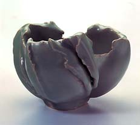

| Jean François Fouilhoux
Contemporary French celadon practitioner
Jean
François Fouilhoux has been working with celadon glazes
for more than 25 years. His hand-built works are glazed and fired
multiple times, before reaching the perfection he is looking for.
His celadon glazes range from light blue-green to a deep olive green
in color. Fouilhoux's works meld the traditional Chinese celadon
glaze with a French free-form aesthetic.
Fouilhoux studied at the École Nationale Supérieur
des Arys Appliqués in Paris from 1962-68. In 1980 he won
the Gold Medal at the International Fair in Munich, Germany, in
1982 he was awarded the Prix CSC at the Biennale Vallauris, France
and in 1998 was winner of the renown Fletcher Challenge Ceramics
Award, Auckland, New Zealand.

Fouilhoux lives and works in Montprès-Chambord
in the Loire valley. He is represented in Europe by Galerie
b15.
More Articles
More Artists of the Week
|